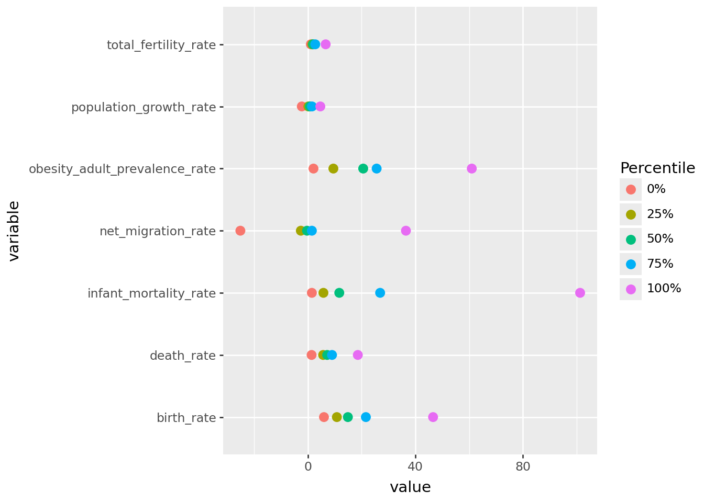
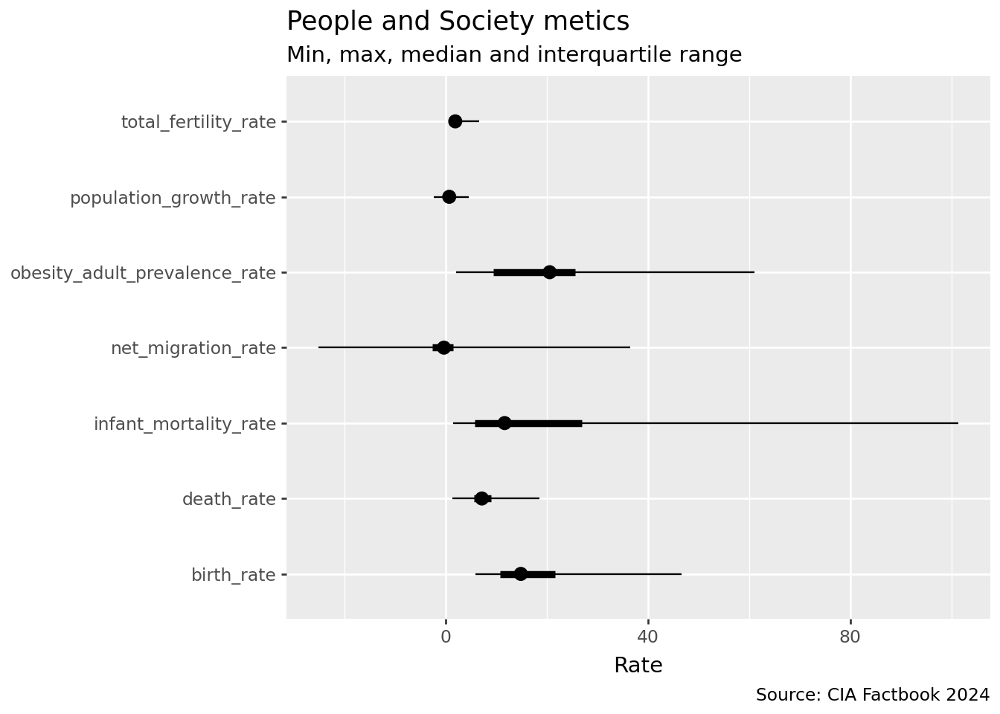

import polars as pl
import polars.selectors as cs
from plotnine import *
from great_tables import GTPractical 5: Pivots + great tables
The objective of the tutorial is to give student a chance to practice the data wrangling and joins applying the skills learned through the video lessons on a new dataset.
Preparation
Note
Before you begin your peer-programming session, please, start the new Jupyter notebook environment in your terminal from your project directory using the command you learned in Module 1 of the course.
uv run jupyter labCreate a new notebook and add a text cell atop your document for this practical session. Add a header # Pivots and great tables. Then add a code cell and place the following code there.
Then import the datasets for this practical. Add another code cell below (using the key ‘B’) and paste the following code. This will import .
ut = pl.read_csv("https://bit.ly/data24utrecht", try_parse_dates=True)
cia_area = pl.read_csv("https://bit.ly/data24ciaarea")
cia_commtran = pl.read_csv("https://bit.ly/data24ciacommtran")
cia_ecosec = pl.read_csv("https://bit.ly/data24ciaecosec")
cia_enenv = pl.read_csv("https://bit.ly/data24ciaenenv")
cia_pplsoc = pl.read_csv("https://bit.ly/data24ciapplsoc")
iso_df = pl.read_csv("https://bit.ly/data24-countrycodes")CIA
Answer the following challenges using CIA datasets.
Challenge 1
Challenge
Calculate share of GDP from sources other than industry, services and agriculture for all countries in Africa. Present results in great table sorted from largest to smallest. Do you find anything strange about the data?
(
cia_ecosec
.filter(pl.col('region')=='Africa')
.select('name', cs.starts_with('gdp_composition'))
.unpivot(on=cs.starts_with('gdp_composition'), index='name')
.group_by('name')
.agg(other_sources=100-pl.col('value').sum())
.sort('other_sources', descending=True)
.pipe(GT)
.cols_label(name="Country",
other_sources="GDP from other sector (%)"
)
.fmt_number('other_sources',decimals=1)
.tab_header(title="GDP share from other sectors*",
subtitle="Africal countries, sorted by share")
.tab_source_note(" Other than industry, services and agriculture")
.opt_stylize(style=1)
)| GDP share from other sectors* | |
|---|---|
| Africal countries, sorted by share | |
| Country | GDP from other sector (%) |
| Somalia | 100.0 |
| Sudan | 81.6 |
| Tanzania | 19.7 |
| Seychelles | 17.2 |
| Burundi | 16.4 |
| Cabo Verde | 14.2 |
| Mauritius | 13.0 |
| Lesotho | 12.8 |
| Burkina Faso | 10.8 |
| Morocco | 10.3 |
| Central African Republic | 10.2 |
| Togo | 10.0 |
| Mozambique | 9.9 |
| South Africa | 9.9 |
| Benin | 9.6 |
| Senegal | 9.1 |
| Madagascar | 9.1 |
| Namibia | 8.9 |
| Gambia, The | 8.7 |
| Guinea | 8.6 |
| Uganda | 7.8 |
| Mali | 7.7 |
| Zimbabwe | 7.6 |
| Malawi | 7.4 |
| Rwanda | 7.1 |
| Ghana | 6.9 |
| Cote d'Ivoire | 6.8 |
| Mauritania | 6.7 |
| Cameroon | 6.5 |
| Zambia | 6.2 |
| Kenya | 6.1 |
| Djibouti | 6.0 |
| Congo, Republic of the | 5.4 |
| Niger | 5.1 |
| Egypt | 5.1 |
| Guinea-Bissau | 5.1 |
| Gabon | 4.9 |
| Eswatini | 4.9 |
| Tunisia | 4.9 |
| Botswana | 4.7 |
| Comoros | 4.2 |
| Liberia | 3.7 |
| Algeria | 3.7 |
| Sierra Leone | 3.1 |
| Ethiopia | 2.7 |
| Sao Tome and Principe | 2.7 |
| Congo, Democratic Republic of the | 2.6 |
| Nigeria | 1.9 |
| Chad | 1.8 |
| Equatorial Guinea | 1.0 |
| Angola | 0.1 |
| Eritrea | 0.0 |
| South Sudan | −0.1 |
| Libya | −33.2 |
| Other than industry, services and agriculture | |
Challenge 2
Challenge
Select the summary percentiles produced by the
💡 Minimum value is corresponding to the 0th percentile and maximum is coinciding with the 100th percentile.
💡 If you want to convert percentile string value to a number try
.describe() method for all variables containing the term “rate” in the People and Society dataset and plot the point estimates using a set of points for every variable. Color the points by the percentile level.💡 Minimum value is corresponding to the 0th percentile and maximum is coinciding with the 100th percentile.
💡 If you want to convert percentile string value to a number try
str.replace("%","").str.to_integer()(
cia_pplsoc
.describe()
.select("statistic", cs.contains("rate"))
.tail(5)
.unpivot(index="statistic")
.with_columns(statistic=pl.when(pl.col("statistic")=="min")
.then(pl.lit("0%"))
.when(pl.col("statistic")=="max")
.then(pl.lit("100%"))
.otherwise(pl.col("statistic")))
# Make numeric statistic to sort correctly in label
.with_columns(pl.col('statistic').
str.replace("%","").str.to_integer().alias("statisticI"))
.pipe(ggplot, aes(x="variable", y="value", color="reorder(statistic,statisticI)"))
+ geom_point(size=3)
+ coord_flip()
+labs(color="Percentile")
)
Challenge 3
Challenge
Reproduce the plot.
💡 The plot is built using
💡 The plot is built using
geom_segment()
(
cia_pplsoc.describe()
.select("statistic", cs.contains("rate"))
.tail(5)
.unpivot(index="statistic")
.with_columns(
statistic=pl.when(pl.col("statistic") == "min")
.then(pl.lit("q_0%"))
.when(pl.col("statistic") == "max")
.then(pl.lit("q_100%"))
.otherwise(pl.lit("q_") + pl.col("statistic"))
)
.pivot(on="statistic", values="value")
.pipe(ggplot)+
geom_point(aes(y="q_50%", x="variable"), size=3)
+ geom_segment(aes(x="variable", xend="variable", y="q_25%", yend="q_75%"), size=2)
+ geom_segment(aes(x="variable", xend="variable", y="q_0%", yend="q_100%"), size=0.5)
+ coord_flip()
+ labs(x="", y="Rate", title="People and Society metics",
subtitle="Min, max, median and interquartile range",
caption="Source: CIA Factbook 2024")
)Challenge 4
Challenge
Compare the values of variables containing the term “rate” in the People and Society dataset for Sweden and Denmark. Present results as a great table with two columns - one for each country.
💡 See if you can make the table look more clean by replacing some symbols with
💡 See if you can make the table look more clean by replacing some symbols with
.str.replace_all()(
cia_pplsoc
.select('name', cs.ends_with('_rate'))
.filter(pl.col('name').is_in(['Denmark', 'Sweden']))
.unpivot(on=cs.ends_with('rate'), index='name', variable_name="rate", value_name="value")
.pivot(on='name', index='rate', values='value')
.with_columns(rate=pl.col('rate').str.replace_all('_', ' ').str.to_titlecase())
.pipe(GT)
.opt_stylize(1)
)| rate | Denmark | Sweden |
|---|---|---|
| Birth Rate | 11.3 | 10.7 |
| Death Rate | 9.6 | 9.6 |
| Infant Mortality Rate | 3.0 | 2.3 |
| Net Migration Rate | 2.7 | 4.0 |
| Obesity Adult Prevalence Rate | 19.7 | 20.6 |
| Population Growth Rate | 0.44 | 0.51 |
| Total Fertility Rate | 1.77 | 1.67 |
Challenge 5
Challenge
Create a great table comparing the proportion of missing values across all numeric columns in the joined CIA Factbook datasets by region.
(
cia_area
.join(cia_commtran, on=["name", "slug", "region"], how="full", coalesce=True)
.join(cia_ecosec, on=["name", "slug", "region"], how="full", coalesce=True)
.join(cia_enenv, on=["name", "slug", "region"], how="full", coalesce=True)
.join(cia_pplsoc, on=["name", "slug", "region"], how="full", coalesce=True)
.group_by('region')
.agg(cs.all().is_null().mean())
.drop("name", "slug")
.unpivot(index='region')
.pivot(on="region", index="variable")
.pipe(GT)
.fmt_percent(columns=cs.numeric(), decimals=1)
.opt_stylize(1)
)| variable | South America | Africa | Middle East | Antarctica | South Asia | Australia and Oceania | Central Asia | North America | Central America and the Caribbean | East and Southeast Asia | Europe |
|---|---|---|---|---|---|---|---|---|---|---|---|
| area_sqkm | 0.0% | 0.0% | 0.0% | 25.0% | 0.0% | 2.8% | 0.0% | 0.0% | 0.0% | 0.0% | 0.0% |
| airports | 7.1% | 0.0% | 5.3% | 50.0% | 0.0% | 27.8% | 0.0% | 14.3% | 3.0% | 9.1% | 13.2% |
| broadband_fixed_subscriptions | 7.1% | 3.6% | 0.0% | 100.0% | 11.1% | 52.8% | 0.0% | 28.6% | 18.2% | 13.6% | 11.3% |
| internet_users | 7.1% | 0.0% | 0.0% | 75.0% | 11.1% | 27.8% | 0.0% | 14.3% | 3.0% | 13.6% | 7.5% |
| merchant_marine | 7.1% | 27.3% | 15.8% | 75.0% | 44.4% | 47.2% | 50.0% | 28.6% | 21.2% | 9.1% | 26.4% |
| railways | 28.6% | 32.7% | 42.1% | 100.0% | 44.4% | 88.9% | 0.0% | 57.1% | 75.8% | 36.4% | 26.4% |
| roadways | 7.1% | 0.0% | 5.3% | 100.0% | 11.1% | 33.3% | 0.0% | 28.6% | 18.2% | 9.1% | 7.5% |
| telephones_fixed_lines | 7.1% | 1.8% | 0.0% | 100.0% | 11.1% | 41.7% | 0.0% | 14.3% | 12.1% | 9.1% | 9.4% |
| telephones_mobile_cellular | 7.1% | 0.0% | 0.0% | 100.0% | 11.1% | 44.4% | 0.0% | 28.6% | 6.1% | 9.1% | 9.4% |
| waterways | 21.4% | 45.5% | 78.9% | 100.0% | 55.6% | 91.7% | 0.0% | 57.1% | 75.8% | 31.8% | 35.8% |
| current_account_balance | 14.3% | 1.8% | 0.0% | 100.0% | 11.1% | 58.3% | 0.0% | 42.9% | 15.2% | 13.6% | 20.8% |
| debt_external | 42.9% | 20.0% | 47.4% | 100.0% | 22.2% | 86.1% | 16.7% | 85.7% | 63.6% | 77.3% | 90.6% |
| exports | 7.1% | 1.8% | 0.0% | 100.0% | 11.1% | 41.7% | 0.0% | 28.6% | 9.1% | 9.1% | 13.2% |
| gdp_composition_by_sector_of_origin_agriculture | 7.1% | 3.6% | 0.0% | 100.0% | 11.1% | 58.3% | 0.0% | 28.6% | 15.2% | 13.6% | 11.3% |
| gdp_composition_by_sector_of_origin_industry | 7.1% | 3.6% | 0.0% | 100.0% | 11.1% | 58.3% | 0.0% | 28.6% | 12.1% | 9.1% | 9.4% |
| gdp_composition_by_sector_of_origin_services | 7.1% | 3.6% | 0.0% | 100.0% | 11.1% | 58.3% | 0.0% | 28.6% | 12.1% | 9.1% | 9.4% |
| gini_index_coefficient_distribution_of_family_income | 21.4% | 14.5% | 47.4% | 100.0% | 33.3% | 83.3% | 16.7% | 42.9% | 69.7% | 36.4% | 24.5% |
| imports | 14.3% | 1.8% | 0.0% | 100.0% | 11.1% | 41.7% | 0.0% | 28.6% | 9.1% | 9.1% | 15.1% |
| industrial_production_growth_rate | 14.3% | 1.8% | 0.0% | 100.0% | 11.1% | 52.8% | 0.0% | 28.6% | 9.1% | 9.1% | 7.5% |
| inflation_rate_consumer_prices | 7.1% | 1.8% | 0.0% | 100.0% | 11.1% | 44.4% | 0.0% | 14.3% | 9.1% | 13.6% | 15.1% |
| labor_force | 7.1% | 1.8% | 0.0% | 100.0% | 11.1% | 61.1% | 0.0% | 14.3% | 42.4% | 9.1% | 9.4% |
| military_expenditures | 14.3% | 9.1% | 15.8% | 100.0% | 33.3% | 88.9% | 0.0% | 57.1% | 60.6% | 22.7% | 26.4% |
| public_debt | 7.1% | 1.8% | 5.3% | 100.0% | 11.1% | 52.8% | 0.0% | 28.6% | 27.3% | 13.6% | 18.9% |
| real_gdp_purchasing_power_parity | 7.1% | 1.8% | 0.0% | 100.0% | 11.1% | 41.7% | 0.0% | 14.3% | 15.2% | 9.1% | 7.5% |
| real_gdp_growth_rate | 7.1% | 1.8% | 0.0% | 100.0% | 11.1% | 47.2% | 0.0% | 28.6% | 12.1% | 9.1% | 11.3% |
| real_gdp_per_capita | 7.1% | 1.8% | 0.0% | 100.0% | 11.1% | 41.7% | 0.0% | 28.6% | 15.2% | 9.1% | 9.4% |
| reserves_of_foreign_exchange_and_gold | 14.3% | 1.8% | 0.0% | 100.0% | 11.1% | 75.0% | 0.0% | 57.1% | 27.3% | 13.6% | 22.6% |
| taxes_and_other_revenues | 14.3% | 3.6% | 0.0% | 100.0% | 11.1% | 52.8% | 0.0% | 28.6% | 21.2% | 13.6% | 18.9% |
| unemployment_rate | 7.1% | 1.8% | 0.0% | 100.0% | 11.1% | 66.7% | 0.0% | 14.3% | 30.3% | 9.1% | 9.4% |
| youth_unemployment_rate_ages_15_24 | 14.3% | 1.8% | 0.0% | 100.0% | 11.1% | 58.3% | 0.0% | 42.9% | 39.4% | 13.6% | 17.0% |
| carbon_dioxide_emissions | 7.1% | 0.0% | 0.0% | 75.0% | 11.1% | 44.4% | 0.0% | 14.3% | 18.2% | 9.1% | 18.9% |
| electricity_installed_generating_capacity | 7.1% | 0.0% | 0.0% | 100.0% | 11.1% | 58.3% | 0.0% | 14.3% | 18.2% | 9.1% | 20.8% |
| energy_consumption_per_capita | 14.3% | 1.8% | 0.0% | 100.0% | 11.1% | 72.2% | 0.0% | 42.9% | 30.3% | 9.1% | 26.4% |
| revenue_from_coal | 21.4% | 9.1% | 15.8% | 100.0% | 11.1% | 72.2% | 0.0% | 42.9% | 27.3% | 22.7% | 24.5% |
| revenue_from_forest_resources | 21.4% | 7.3% | 5.3% | 100.0% | 11.1% | 55.6% | 0.0% | 42.9% | 21.2% | 18.2% | 13.2% |
| alcohol_consumption_per_capita | 14.3% | 3.6% | 10.5% | 100.0% | 11.1% | 63.9% | 0.0% | 57.1% | 39.4% | 22.7% | 24.5% |
| birth_rate | 7.1% | 0.0% | 0.0% | 100.0% | 11.1% | 44.4% | 0.0% | 14.3% | 3.0% | 9.1% | 7.5% |
| children_under_the_age_of_5_years_underweight | 28.6% | 18.2% | 26.3% | 100.0% | 22.2% | 77.8% | 16.7% | 71.4% | 66.7% | 40.9% | 79.2% |
| death_rate | 7.1% | 0.0% | 0.0% | 100.0% | 11.1% | 41.7% | 0.0% | 14.3% | 3.0% | 9.1% | 7.5% |
| education_expenditures | 14.3% | 9.1% | 10.5% | 100.0% | 11.1% | 63.9% | 0.0% | 28.6% | 18.2% | 18.2% | 22.6% |
| infant_mortality_rate | 14.3% | 0.0% | 0.0% | 100.0% | 11.1% | 44.4% | 0.0% | 14.3% | 3.0% | 9.1% | 7.5% |
| life_expectancy_at_birth | 14.3% | 0.0% | 0.0% | 100.0% | 11.1% | 44.4% | 0.0% | 14.3% | 3.0% | 9.1% | 7.5% |
| maternal_mortality_ratio | 14.3% | 1.8% | 0.0% | 100.0% | 11.1% | 75.0% | 0.0% | 57.1% | 42.4% | 22.7% | 26.4% |
| median_age | 14.3% | 0.0% | 0.0% | 100.0% | 11.1% | 38.9% | 0.0% | 14.3% | 3.0% | 9.1% | 7.5% |
| net_migration_rate | 14.3% | 0.0% | 0.0% | 100.0% | 11.1% | 41.7% | 0.0% | 14.3% | 3.0% | 4.5% | 5.7% |
| obesity_adult_prevalence_rate | 14.3% | 1.8% | 10.5% | 100.0% | 11.1% | 58.3% | 0.0% | 57.1% | 39.4% | 22.7% | 24.5% |
| population_total | 7.1% | 0.0% | 0.0% | 100.0% | 11.1% | 27.8% | 0.0% | 14.3% | 3.0% | 4.5% | 3.8% |
| population_growth_rate | 7.1% | 0.0% | 0.0% | 100.0% | 11.1% | 30.6% | 0.0% | 14.3% | 3.0% | 4.5% | 3.8% |
| tobacco_use | 28.6% | 20.0% | 21.1% | 100.0% | 22.2% | 63.9% | 16.7% | 57.1% | 66.7% | 22.7% | 26.4% |
| total_fertility_rate | 14.3% | 0.0% | 0.0% | 100.0% | 11.1% | 44.4% | 0.0% | 14.3% | 3.0% | 9.1% | 7.5% |
Challenge 6
Challenge
Show the densty plot of every numeric variable in the People and Societies dataset as small multiples (facets), three subplots in each row.
💡 You will need to free up the scales as
💡 You will need to free up the scales as
facet_wrap(scales='free')(
cia_pplsoc
.drop("slug", "region")
.unpivot(index="name")
.pipe(ggplot)+
geom_density(aes(x="value"))+
facet_wrap("variable", scales="free", ncol=3)
)C:\Projects\Teaching\LUDataLiteracy\.venv\Lib\site-packages\plotnine\layer.py:293: PlotnineWarning: stat_density : Removed 431 rows containing non-finite values.
Challenge 7
Challenge
Pivot the descriptive table (.describe()) for all numeric variables in the Energy and Environment dataset, making it one row per variable (instead of one column per variable). Do you find this presentation of the summary statistics easier to read?
(
cia_enenv
.select(cs.numeric())
.describe()
.unpivot(index="statistic")
.pivot(on="statistic", index="variable")
)
shape: (5, 10)
| variable | count | null_count | mean | std | min | 25% | 50% | 75% | max |
|---|---|---|---|---|---|---|---|---|---|
| str | f64 | f64 | f64 | f64 | f64 | f64 | f64 | f64 | f64 |
| "carbon_dioxide_emissions" | 218.0 | 8.0 | 1.7657e8 | 1.0012e9 | 0.0 | 1.442e6 | 9.017e6 | 5.7876e7 | 1.3506e10 |
| "electricity_installed_generati… | 211.0 | 15.0 | 4.0202e7 | 2.0257e8 | 3000.0 | 359000.0 | 3.204e6 | 1.6926e7 | 2.5940e9 |
| "energy_consumption_per_capita" | 195.0 | 31.0 | 7.9249e7 | 1.1008e8 | 661000.0 | 1.1726e7 | 4.6564e7 | 1.02832e8 | 7.67202e8 |
| "revenue_from_coal" | 186.0 | 40.0 | 0.142473 | 0.737287 | 0.0 | 0.0 | 0.0 | 0.01 | 8.62 |
| "revenue_from_forest_resources" | 204.0 | 22.0 | 1.12 | 2.443002 | 0.0 | 0.01 | 0.15 | 1.02 | 20.27 |
Utrecht
Answer the following challenges using the Utrecht dataset.
Challenge 8
Challenge
Your friend is torn between choosing a small studio downtown Utrecht (located in Javastraat, ID = 5068) or one of the similarly-priced (same asking price) apartments along the Moerashoeve street in Nieuwegein. Could you show these two options side by side in a great table, showing the meaningful variables of comparison to highlight the trade-offs your friend will be making when choosing between these two options? Show the difference between the respective values in absolute values and in percent.
💡 If you want to extract a value, subset it to 1x1 dataframe and then extract with
💡 For the apartments in Nieuwegein, feel free to choose one that you think is the best. Explain your choice.
💡 If you want to extract a value, subset it to 1x1 dataframe and then extract with
.item()💡 For the apartments in Nieuwegein, feel free to choose one that you think is the best. Explain your choice.
## get the asking price
budget = ut.filter(pl.col("id") == 5068).select("asking_price").item()
# I take the largest retail value apartment in Nieuwegein, because otherwise apartment are the same.
apt_neu = (
ut.filter(pl.col("city") == "Nieuwegein", pl.col("asking_price") == budget)
.sort("retail_value")
.tail(1)
.select("id")
.item()
)
(
ut.filter(pl.col("id").is_in([5068, apt_neu]))
.select(
# "id",
"house_area",
"garden_size",
"rooms",
"build_year",
"retail_value",
# "energy_label",
"street",
# "city",
"dist_from_train",
)
.unpivot(index="street")
.pivot(on="street", values="value")
.with_columns(
difference=pl.col("Moerashoeve") - pl.col("Javastraat"),
pct_difference=pl.col("Moerashoeve")/pl.col("Javastraat")-1)
.pipe(GT)
.fmt_percent(columns="pct_difference", decimals=1)
.opt_stylize(1)
)| variable | Javastraat | Moerashoeve | difference | pct_difference |
|---|---|---|---|---|
| house_area | 47.0 | 64.0 | 17.0 | 36.2% |
| garden_size | 13.0 | 0.0 | -13.0 | −100.0% |
| rooms | 1.0 | 2.0 | 1.0 | 100.0% |
| build_year | 1910.0 | 2012.0 | 102.0 | 5.3% |
| retail_value | 386.0 | 370.0 | -16.0 | −4.1% |
| dist_from_train | 0.76 | 4.27 | 3.51 | 461.8% |